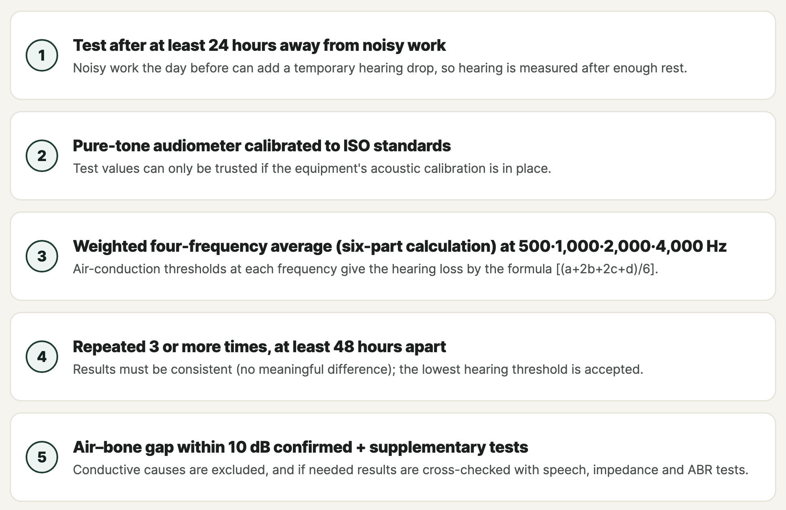

Thirty years in a shipyard or machine shop, and now you can't hear well? It may not just be ageing.
Many people have spent decades working in shipyards, machine and metal-working plants, or on construction sites. Around retirement, they start to notice that "the TV is hard to hear" or that "I can't follow conversations in crowded places." It's easy to put this down to age, but if you worked in a noisy environment for a long time, it may be noise-induced hearing loss.
It doesn't have to be 30 years, though. The legal criterion looks at a history of exposure to continuous noise of 85 dB(A) or more for 3 years or more, together with hearing test results. Noise-induced hearing loss is one of the most common occupational diseases recognised and compensated as an industrial accident in Korea. Below I explain what it is, which tests are used to recognise it, and the new "specialised hearing test clinic" scheme run by the Korea Workers' Compensation & Welfare Service (COMWEL) since 2026.
In this article 6 sections · 6 min read
1. What is noise-induced hearing loss?
Noise-induced hearing loss happens when long exposure to loud sound damages the hair cells in the cochlea that detect sound. Damaged hair cells don't regenerate, so noise-induced hearing loss is usually permanent. That's why prevention and accurate assessment matter more than "treatment."
Typical features
- It affects both ears to a similar degree.
- The high pitches around 4,000 Hz drop first and most.
- It is painless and progresses very slowly, so people often notice it late.
- It often comes with tinnitus (ringing) and difficulty telling speech apart in noisy places.
How is it different from age-related hearing loss?
Age-related hearing loss is a natural decline in hearing with age, whereas noise-induced hearing loss is an occupational disease caused by long-term noise exposure at work. If you have worked in a shipyard, machine shop, metal-working plant or on construction sites, it's worth checking whether occupational noise-induced hearing loss is involved rather than assuming it's just age.
2. When is it recognised as a work injury? Key criteria
Key statutory criteria include a history of exposure to continuous noise of at least 85 dB(A) for at least three years and sensorineural hearing loss of at least 40 dB in one ear. These are not the only requirements: the regulations also specify ear findings, the hearing-loss pattern and reliable testing, and require assessment of other causes. Establishing occupational causation, measuring hearing impairment and deciding the disability grade and benefits are separate parts of COMWEL's assessment. A hearing-test result alone does not guarantee compensation.
The main criteria are:
- Exposure to 85 dB(A) or more for 3 years or more — continuous noise of 85 decibels or more for at least three years. Periods at different workplaces can be added together, and you may qualify even if you didn't operate the noisy equipment yourself, as long as the noise at your workplace was 85 dB or more.
- Hearing loss of 40 dB or more in at least one ear — Hearing loss is assessed using a weighted four-frequency average: (a + 2b + 2c + d) / 6, where a, b, c and d are the air-conduction thresholds at 500, 1,000, 2,000 and 4,000 Hz. This is the Korean “six-part” calculation (6분법), not an average of six frequencies.
- Sensorineural hearing loss — the hearing loss must come from the inner ear or nerve, not from damage to the eardrum or middle ear (conductive hearing loss).
3. Which tests are done? The standard diagnostic method
For work-injury noise-induced hearing loss, the test method itself is set by regulation because precision and reliability are essential. The key rules are:

This chart summarises the usual testing rules. Additional reliability checks and repeat testing may be required. The regulations include specific provisions for acoustic-trauma cases and for deciding whether retesting can be omitted after other test results are reviewed.
The assessment usually includes an ENT examination with standard pure-tone audiometry, speech audiometry and impedance (tympanometry) testing, and auditory brainstem response (ABR) testing is added when needed to confirm reliability.
In other words, a proper test needs a sound-proof booth, ISO-calibrated equipment, yearly ambient-noise measurement and acoustic calibration (quality control), and an ENT specialist and audiologist to perform and interpret the tests. That is the reason for the certification described below.
4. How are the disability grade and compensation decided?
If COMWEL recognises a compensable permanent hearing impairment, the disability grade and applicable benefit rules determine the amount and payment method. Ask COMWEL to confirm the calculation and the payment options that apply to your grade.
- 40 dB or more in one ear is the minimum (lowest grade) for recognising a disability.
- The greater the hearing loss, and the more both ears are affected, the higher the grade.
- After approval and recognition of a disability, you can check with COMWEL whether support for hearing aids or other assistive devices is available under its criteria.
Whether the claim is approved, and the final grade and amount, are decided by COMWEL. For the claim procedure itself, help from a certified labour attorney (공인노무사) is recommended. The clinic's role is accurate hearing testing and submitting the results.
5. What is a "specialised hearing test clinic"?
Previously, work-injury hearing tests were mostly done as "special examinations" at general or university hospitals, which meant long waits and travel. In 2026 COMWEL introduced certification of specialised hearing test clinics so that injured workers can get closer, faster and still reliable testing.
- Eligible: industrial-accident-insurance clinics with an ENT department that meet the certification standards.
- All required items for staff, facilities, equipment and tests must be met; missing any one means failing.
- A document review plus an on-site inspection, with an overall score of 80 or more, is required.
- Only a limited number of clinics are certified, considering regional distribution.
- After certification, quality control (ambient-noise measurement in the test booth, acoustic calibration) continues every year.
Certified clinics can submit test results directly through COMWEL's online Total Service, which makes the disability-benefit claim easier for the worker.
Sangkwaehan ENT Clinic (Jinhae-gu, Changwon) was certified by COMWEL as a specialised hearing test clinic in 2026. The certification runs until May 31, 2027, with re-certification by evaluation planned after that.
6. Consider a hearing test if…
- You worked for 3 years or more in a noisy setting — shipbuilding, machinery, metal-working, construction, textiles, power generation
- Your hearing in both ears has slowly got worse, during work or after retiring
- You hear a ringing or beeping sound in your ears (tinnitus)
- You find it especially hard to follow speech in noisy places
If any of these apply, an accurate hearing test to identify the cause is the first step. For more on deciding about hearing aids, see hearing aids for mild to moderate hearing loss; if tinnitus bothers you, see tinnitus CBT and self-help. Test items and procedures can be explained in English at the clinic or by phone.
This article is an English adaptation of a Korean post by Dr. OH JUNGHO. It is general health information, not legal advice or a diagnosis. Approval of work-injury claims, disability grades and compensation are decided by COMWEL, not by the clinic.